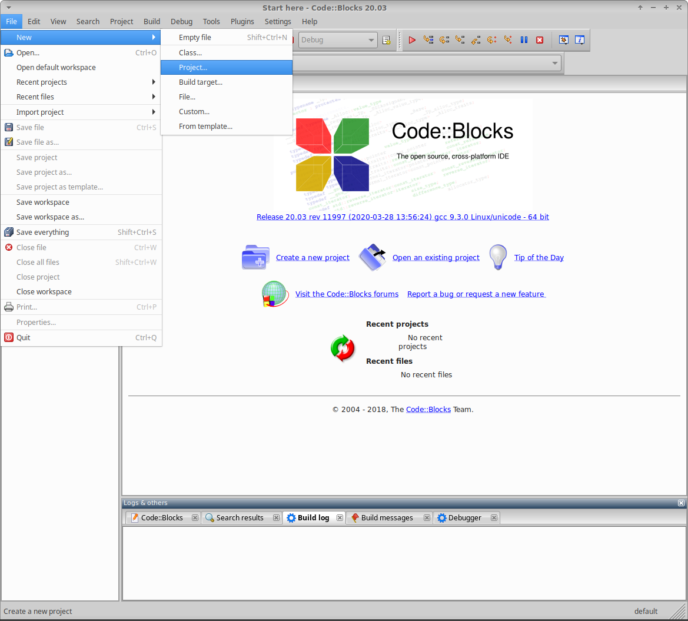
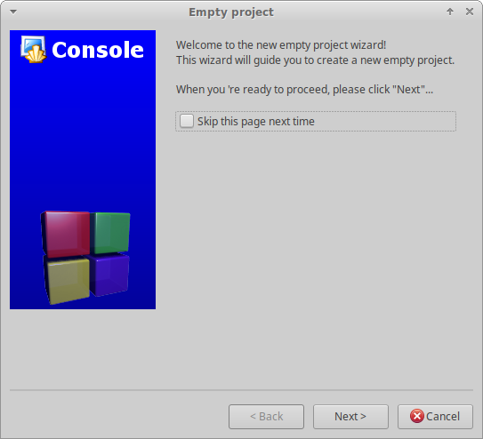
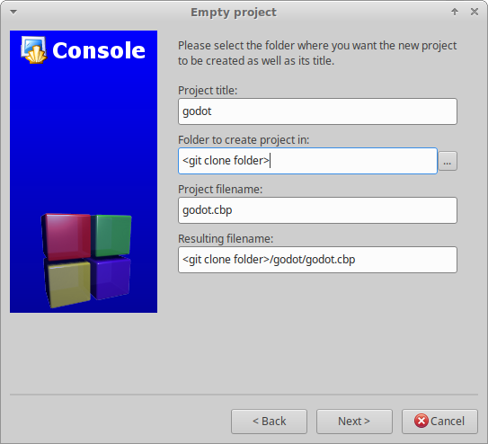
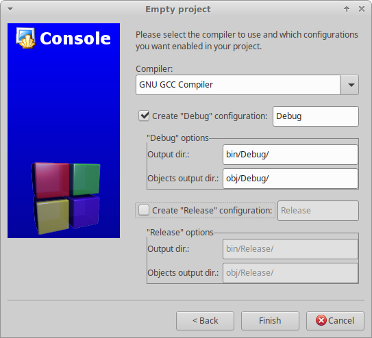
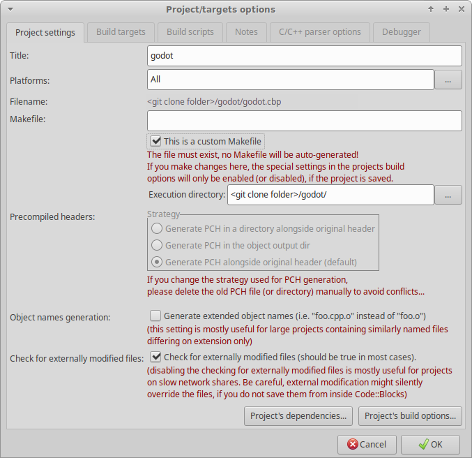
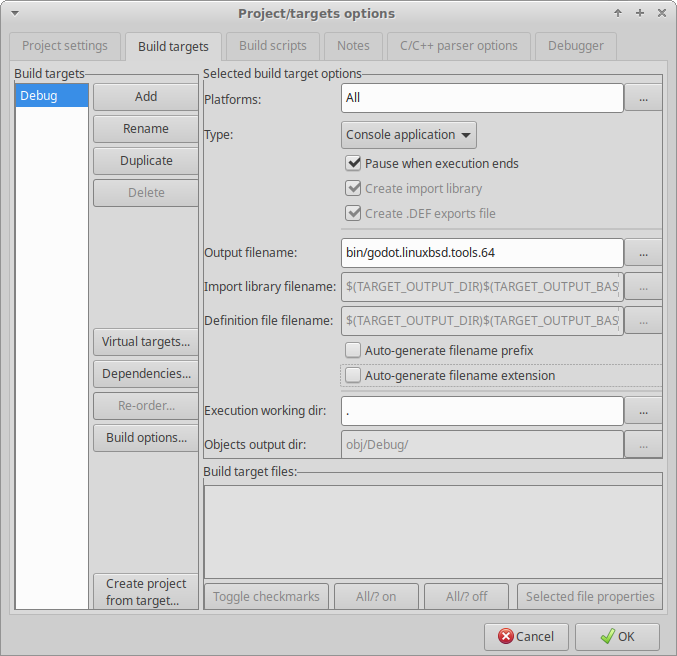
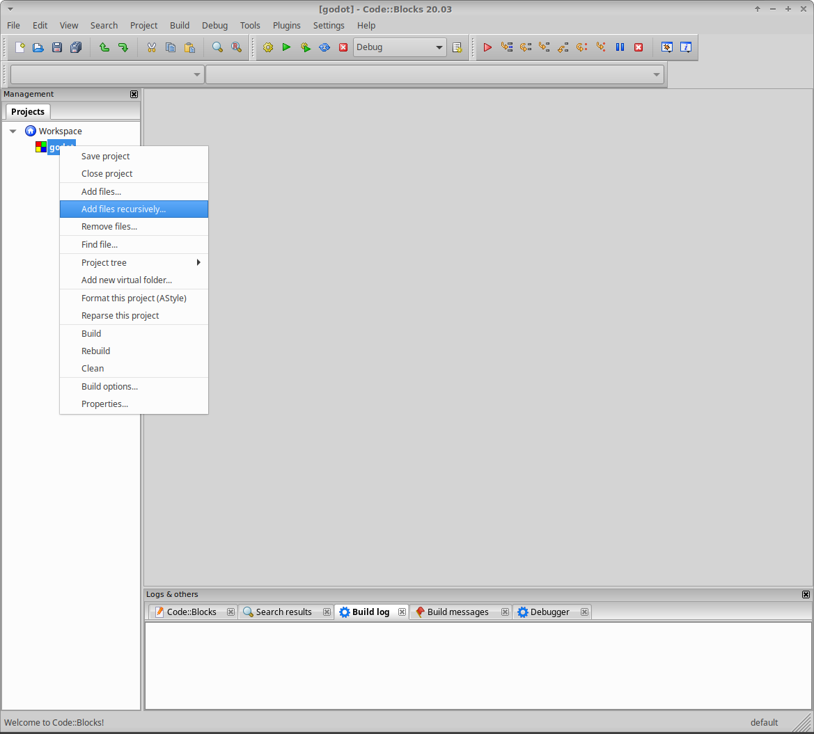
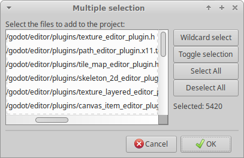

Code::Blocks
Code::Blocks is a free, open-source, cross-platform IDE.
Creating a new project
From Code::Blocks' main screen, click Create a new project or select File > New > Project....

In the New from template window, from Projects, select Empty project, and click Go.

Click Next, to pass the welcome to the new empty project wizard.

The project file should be created in the root of the cloned project folder. To achieve this, first, ensure that the Project title is the same as the folder name that Godot was cloned into. Unless you cloned the project into a folder with a different name, this will be godot.
Second, ensure that the Folder to create project in is the folder you ran the Git clone command from, not the godot project folder. Confirm that the Resulting filename field will create the project file in the root of the cloned project folder.

The compiler and configuration settings are managed through SCons and will be configured later. However, it's worth deselecting the Create "Release" configuration option; so only a single build target is created before clicking Finish.

Configuring the build
The first step is to change the project properties. Right-click on the new project and select Properties....

Check the This is a custom Makefile property. Click OK to save the changes.

The next step is to change the build options. Right-click on the new project and select Build Options....

Select the "Make" commands tab and remove all the existing commands for all the build targets. For each build target enter the SCons command for creating the desired build in the Build project/target field. The minimum is scons. For details on the SCons build options, see Introduction to the buildsystem. It's also useful to add the scons --clean command in the Clean project/target field to the project's default commands.
If you're using Windows, all the commands need to be preceded with cmd /c to initialize the command interpreter.


Windows example:

Code::Blocks should now be configured to build Godot; so either select Build > Build, click the gear button, or press Ctrl + F9.
Configuring the run
Once SCons has successfully built the desired target, reopen the project Properties... and select the Build targets tab. In the Output filename field, browse to the bin folder and select the compiled file.
Deselect the Auto-generate filename prefix and Auto-generate filename extension options.

Code::Blocks should now be configured to run your compiled Godot executable; so either select Build > Run, click the green arrow button, or press Ctrl + F10.
There are two additional points worth noting. First, if required, the Execution working dir field can be used to test specific projects, by setting it to the folder containing the project.godot file. Second, the Build targets tab can be used to add and remove build targets for working with and creating different builds.
Adding files to the project
To add all the Godot code files to the project, right-click on the new project and select Add files recursively....

It should automatically select the project folder; so simply click Open. By default, all code files are included, so simply click OK.

Code style configuration
Before editing any files, remember that all code needs to comply with the code style guidelines. One important difference with Godot is the use of tabs for indents. Therefore, the key default editor setting that needs to be changed in Code::Blocks is to enable tabs for indents. This setting can be found by selecting Settings > Editor.

Under General Settings, on the Editor Settings tab, under Tab Options check Use TAB character.

That's it. You're ready to start contributing to Godot using the Code::Blocks IDE. Remember to save the project file and the Workspace. If you run into any issues, ask for help in one of Godot's community channels.